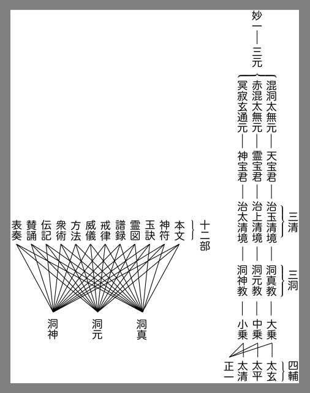

支那に道教と稱せらるゝ宗教があり、道家といはるゝ師徒があつて、そして傳承年久しく其教が今に存在し、其徒が猶少からざることは、周知の事實である。盛衰隆替は何物の上にも免るべからざることであるから、現時は唐宋元明の世に比しては勢威の揚がらざる觀があるが、それでも道教道家の氣味風韵が、禹域の文學藝術を浸涵し、社會民衆を薫染してゐることは、なか／＼深大であつて、儒教、佛教と鼎立して、支那文化を三分して其一を有してゐると云つても宜いほどである。此故に道教道家の氣味風韵を知らずしては支那其物を解釋することが不可能だと云ふとも、誰も否といふものはあるまい。試に士人の間に愛好さるゝ詩を觀よう。李太白の詩篇幾百十、其中ににじみ出てゐる高い感情、人生の紛紜のみに沒頭埋身することを肯んじないところのものは、道家的氣味風韵でなくて何であらう。蘇東坡や陸放翁の詩に道家の香のするのは誰も知るところである。民庶の間に愛好さるゝ小説を觀よう。水滸傳は劈頭第一に、道家の神祕を點出して、百八魔君を走らす一場を物凄じく描いてゐるではないか。紅樓夢は主人公賈寶玉が紅を憐み翠を惜むの癡情を脱し、富貴名利を弊履の如くにして、赤足に雪を踐んで大踏歩し去るところを歸結にしてゐる。道家的の味でなくて何の味であらう。演劇には滑稽化さるゝまでに道教的臭氣のするものが多いのである。宋元の畫を觀よう。人は誰しも神仙の高致が陽に陰に寫取せられてゐることが餘りにも多いのを感ぜずには居られまい。年中行事を考察しよう。彼の賑やかな上元燈華の節からはじめて道教信仰の意を有つものはもとより多い。民衆信仰の符呪
 祭祈祷禳祓の類、及びそれらに關する傳説等、道教から派出したもの、道教を混入せるもの、それも亦もとより多い。たゞし道教の支那に於ける、是の如く廣被弘通せるにかゝはらず、さて道教は如何なるものぞ、道教の思想は如何なるものぞ、といふ問に對しては、明白的確に答ふることは甚だ容易でない。
祭祈祷禳祓の類、及びそれらに關する傳説等、道教から派出したもの、道教を混入せるもの、それも亦もとより多い。たゞし道教の支那に於ける、是の如く廣被弘通せるにかゝはらず、さて道教は如何なるものぞ、道教の思想は如何なるものぞ、といふ問に對しては、明白的確に答ふることは甚だ容易でない。もつとも道教のみではない、凡そ宗教といふものは、その核心又は頂上の意義の如何なるものであるかが難思難議であるのを常とする。否、その難思難議であるのがむしろ宗教其物の根本性質であつて、理智のみで解釋し盡し、批評し了せらるゝが如きものは、宗教たるの尊嚴を保持する所以のもので無いとも云へるのである。智解を以てしては到達し能はざるところの玄奧の或點を有してゐて、其點を體得身證せしむるに至る道程を歩ましむることが即ち宗教の本眞の意義なのである。それ故に或宗教を他方面の人士が外部から會得せんとすることは、其宗教から云へば無理な事であつて、理智のみを以て宗教を會得せんとするのは、砂を煮て飯と爲さんと欲するが如しと、其宗教からは彈呵さるるのが當然である。苟も宗教たる以上は其宗教は必ず凡夫の智解の及びかぬるものとするところの神聖のものが儼存してゐるのであつて、佛教其他では之を聖量となし、基督教其他では之を神となしてゐるのである。故に何の宗教でも宗教は必ず先づ「信」を要求し、信に伴なふところの「行」を要求し、信の純熟と行の精到とによつて、然る後に聖域に入り、神意に協ふを得、即ち其宗教の眞義を了するを得るとするものである。神を立つる宗教に於ては、初入門者に解つても解らなくても先づ神を信ずることを要とする。佛陀を立つる宗教に於ては、先づ佛陀を信ずることを要とする。阿彌陀を奉ずる教に於ては、世間普通の智解を棄てゝも、即ち現量相違を犯しても、阿彌陀を信ずることを要とする。宗教は皆「信先解後」のものである。不可思議底の本體に對つて、信といふところの飛空の鳥の道のやうな道を通つて衝き進ましむるのが宗教である。道教では神をも基督をも佛をも阿彌陀をもアラーをも立てぬが、猶且宗教である。猶且信を以て入りて而して後に之を證解すべきことを求むるものである。外部から理智のみを以て道教の如何なるものなるかを知つて、そして之を語らんとすることは、道教から云へばもとより無理なことである。卒然として今「樂靜信」といふ人の名を擧げたとて、我邦人は恐らく知れるものも少からうやうな世に於て、智解一方から道教を語ることももとより難事であり、そして道教の如何なるものなるかを解せしめんことは甚だ難いことである。
宗教は那の宗教も世界の一切を包み容れてゐる。過去、現在、未來の三世、明、幽の二界を我物にして居らぬ宗教は無い。しかし宗教も實は人間界の一事象であるから、やはり人間界に於て、發生したり、開展したり、修正されたり、補足されたり、變化したり、墮落したり、異旨の侵入を見たり、時代の裝飾を受けたり、其他種
 の遷移の路を辿ることは、他の文學や藝術と異なることは無い。そこで一源多派といふことは那の宗教にも免れない。隨つて左極の一派と右極の一派とは相應の距離を生ずる。エホバの教でも、舊教、新教、ユニテリアン、其差異は決して少く無い。佛教の阿含の素樸、華嚴の高華、密教の事相を重んずる、禪宗の文字を輕んずる、其差は實に甚だしい。法華經の如きは一部の經の内でさへ壽量品や提婆品と彼の安樂行品とはその説者筆者が異なりはせぬかと思はるゝほどに氣味風韵の差があるではないか。阿彌陀宗の如きは平正若くは爽利な批判からは、あれが佛教か、と訝らるゝほど他派とは異なつてゐる、と云はれても致方はあるまい。そこで那の一派を擧げて、これが眞のエホバの宗教である、これが眞の佛陀の宗教であると云ふことは難いので、擧げられた其一派は是認するにしても他の派は承知しかねるであらうから、畢竟ずるに局外からは、一に據つて之を説くことは公平でなく、又汎く通じて圓かに説くといふことは、野にもつかず山にもつかぬ景色を描出して、新に一不實のものを做出すといふことになる。で、それは避けねばならぬ。が、一各個にわたつて説くのでは總體のまとまりが出來ぬ。で、それも避けねばならぬ。さすれば凡てが出來ぬ相談になる。道教の中でも、漢末、三國からの舊い正一派と、宋末、金からの比較的新らしい全眞派とは一にならぬ。舊い方の教はやゝ超越的であり、新らしい方の教はやゝ現實的であつて、勿論道家を宗とはするが、儒佛の意氣を取入れてゐる。此二者の差は猶宜いとして、三國の呉の于吉仙人一派の如きは、全く別途のものの觀がある。晉の葛仙公一流は、洞眞部に取入れられてはゐるが、其系に出た抱朴子は神僊家ではあるけれど、勿論道家の別格一派だ。梁の陶弘景は勝れた人物だが、その所説を窺ふとおのづから特異な風格を有してゐて、抱朴子とも異なれば、漢末の魏伯陽などとも異なる。魏伯陽を祖にして、後に張紫陽其他を出した所謂丹家の一派は、勿論道家の髓腦のやうなものだが、それは漢の張道陵以來の衆生濟度の方面を主として祭符呪、教誡や式儀を事とする普通に所謂道家とは餘程の距離を有することは爭はれない。佛教はその行はれた範圍が廣大で、印度以來の年處甚だ久しく博く、人物も甚だ多かつたので、自然と其中に所證所説の差異が現はれ、早く小乘衆大乘衆の軋轢から、各派の間の爭鬩も少からず世の耳目にさらされたが、道教の方は佛教といふ偉大な外敵に包圍されてゐた觀があるので、佛教に對しては搏噬を敢てしたことは少く無いが、内部で互に攻撃しあつたやうな史實は鮮く、隨つて外部からは道教は渾然一團を爲してゐるやうに見え、中に何等の異趣別途もないかの如く思はれてゐるが、一大山脈である以上、中に高低險夷さま／″＼の峰巒丘嶽の無いことは無い道理で、意趣精神形態色彩、各相異なつたものが存してゐることは免れない。勿論全體の中に部分があり、部分が集まつて全體が成るのだから、同中に異がある代り、異中に同のあるのは、自明の事である。故に道教の中の那の一部分、那の一派が道教では無いといふことは云へぬ。然し道教の成立が、釋迦を起首にして佛教が成立つたといふやうなものでなく、老子を最初にして道教は發生したと一般世人は無批判に認めてゐるやうであるが、それはやゝ間違つてゐるのであつて、道教は最初から種のものが他の力によつて集められて一大塊と成つた集成岩のやうなものである。支那民族の間の古傳説や習氣や信仰や思想や感情や希望や叡智が、佛教其他が西方より文化の大壓力を禹域に加ふるに當つて、彼は彼、此は此と、おのづからに集まつて、一大團塊を成したと觀ても宜いやうな氣がする。で、道教の中には、展開して異なつたものが生じたのみでなく、最初から隨分異なつたものが存在してゐたのであらうといふことも注意を値する［＃「注意を値する」はママ］のである。
の遷移の路を辿ることは、他の文學や藝術と異なることは無い。そこで一源多派といふことは那の宗教にも免れない。隨つて左極の一派と右極の一派とは相應の距離を生ずる。エホバの教でも、舊教、新教、ユニテリアン、其差異は決して少く無い。佛教の阿含の素樸、華嚴の高華、密教の事相を重んずる、禪宗の文字を輕んずる、其差は實に甚だしい。法華經の如きは一部の經の内でさへ壽量品や提婆品と彼の安樂行品とはその説者筆者が異なりはせぬかと思はるゝほどに氣味風韵の差があるではないか。阿彌陀宗の如きは平正若くは爽利な批判からは、あれが佛教か、と訝らるゝほど他派とは異なつてゐる、と云はれても致方はあるまい。そこで那の一派を擧げて、これが眞のエホバの宗教である、これが眞の佛陀の宗教であると云ふことは難いので、擧げられた其一派は是認するにしても他の派は承知しかねるであらうから、畢竟ずるに局外からは、一に據つて之を説くことは公平でなく、又汎く通じて圓かに説くといふことは、野にもつかず山にもつかぬ景色を描出して、新に一不實のものを做出すといふことになる。で、それは避けねばならぬ。が、一各個にわたつて説くのでは總體のまとまりが出來ぬ。で、それも避けねばならぬ。さすれば凡てが出來ぬ相談になる。道教の中でも、漢末、三國からの舊い正一派と、宋末、金からの比較的新らしい全眞派とは一にならぬ。舊い方の教はやゝ超越的であり、新らしい方の教はやゝ現實的であつて、勿論道家を宗とはするが、儒佛の意氣を取入れてゐる。此二者の差は猶宜いとして、三國の呉の于吉仙人一派の如きは、全く別途のものの觀がある。晉の葛仙公一流は、洞眞部に取入れられてはゐるが、其系に出た抱朴子は神僊家ではあるけれど、勿論道家の別格一派だ。梁の陶弘景は勝れた人物だが、その所説を窺ふとおのづから特異な風格を有してゐて、抱朴子とも異なれば、漢末の魏伯陽などとも異なる。魏伯陽を祖にして、後に張紫陽其他を出した所謂丹家の一派は、勿論道家の髓腦のやうなものだが、それは漢の張道陵以來の衆生濟度の方面を主として祭符呪、教誡や式儀を事とする普通に所謂道家とは餘程の距離を有することは爭はれない。佛教はその行はれた範圍が廣大で、印度以來の年處甚だ久しく博く、人物も甚だ多かつたので、自然と其中に所證所説の差異が現はれ、早く小乘衆大乘衆の軋轢から、各派の間の爭鬩も少からず世の耳目にさらされたが、道教の方は佛教といふ偉大な外敵に包圍されてゐた觀があるので、佛教に對しては搏噬を敢てしたことは少く無いが、内部で互に攻撃しあつたやうな史實は鮮く、隨つて外部からは道教は渾然一團を爲してゐるやうに見え、中に何等の異趣別途もないかの如く思はれてゐるが、一大山脈である以上、中に高低險夷さま／″＼の峰巒丘嶽の無いことは無い道理で、意趣精神形態色彩、各相異なつたものが存してゐることは免れない。勿論全體の中に部分があり、部分が集まつて全體が成るのだから、同中に異がある代り、異中に同のあるのは、自明の事である。故に道教の中の那の一部分、那の一派が道教では無いといふことは云へぬ。然し道教の成立が、釋迦を起首にして佛教が成立つたといふやうなものでなく、老子を最初にして道教は發生したと一般世人は無批判に認めてゐるやうであるが、それはやゝ間違つてゐるのであつて、道教は最初から種のものが他の力によつて集められて一大塊と成つた集成岩のやうなものである。支那民族の間の古傳説や習氣や信仰や思想や感情や希望や叡智が、佛教其他が西方より文化の大壓力を禹域に加ふるに當つて、彼は彼、此は此と、おのづからに集まつて、一大團塊を成したと觀ても宜いやうな氣がする。で、道教の中には、展開して異なつたものが生じたのみでなく、最初から隨分異なつたものが存在してゐたのであらうといふことも注意を値する［＃「注意を値する」はママ］のである。それから又二個の異なつた存在が相會ふに當つては、そこに必然或作用が起る。これを接觸作用といふ。人事は流動容易性のものであるから、岩石と岩石との間に起る接觸作用の如くなる状態を惹起すことはないが、それでも兩者の交加、交綏、親和、反抗、相奪、互避等の種
相の混化した作用が起る。佛教と道教との接觸作用は佛教の中にも佛教ではないものを生じ、道教の中にも道教ではないものを生じた痕跡がある。宋の朱子は道家は佛家の精處を盜まずに粗處を盜んでゐる、笑ふべきである、といふやうに云つてゐるが、それも一應は當つてゐる見解だけれど、それよりはむしろ自然の接觸作用だと云つた方が可いかも知れぬ。意識して他の所有を掠取盜用するならば、何で其精なるものをさし置いて其粗なるものを取る事が有らうか。（仙佛合致の論の起つて、道教の書に觀音大士などが出てくるのは、それはずつと後の事で、別の談である。王重陽一派が儒佛を取用ゐたのは、こゝに説いてゐる意味の外の事と見做してほしい。勿論重陽は朱子より後の人である。）道教の中の天地創造論、證道階級論等は如何にも接觸作用で起つたことと見れば見られるのである。これ等は佛教から來つたか、或は佛教以外、例すれば婆羅門教等から來つたか。もう一段進んで論ずれば道教中の或一部分は、婆羅門教との間に、接觸ではなくて、繼承の作用で出來てゐるかとも思へるが、これは別に詳論を要することである。兎に角に道教の中に印度臭いものが少く無いことは事實である。佛家に符といふものを用ゐて、人を護り災を禳ふことをするのは我邦でもするが、あれは佛法から出たことか、仙家から出たことか、大藏密部には其符字が見えてゐるが、遙に古い葛洪の書に見えてゐる符字と同じやうな體である。梵書では無い、篆體に近いのだから、佛家の中の道家臭いものである。北斗星の崇拜などは道佛いづれが先か、雙方共に早くから存したか。凡そ是の如く道中に佛あり、佛中に道あることは、數へ立てたら少くはあるまいが、そんな瑣細な事どころではない、本幹的に老子の思想は少佛家の言に似たところがあり、且又西のかた流沙に入つて終つたといふ傳説があつたところから、道家は佛家を併呑しようとして、老子化胡の説を立て、佛教は老子によつて出來たものだと誣ひ、唐の時には玄奘三藏を強ひて、老子道徳經を梵文に譯させたことさへあるほどだ。で、もし今印度の何處かでサンスクリットの老子を發見でもしたら隨分奇異な談だが、然樣なことがあつたにしても驚くには足らない。佛家の方では又列子の中に西方の聖人の事を記して讚してあるのを、釋迦の事だ、と云ひもせずに納まりかへつて居る。劉向の列仙傳（抱朴子に劉向の撰するところの列仙傳とあるので、劉向の撰と信ぜられてゐるが、今傳ふる列仙傳は敬すべき學者劉向の撰ではない。後漢の後の陋人の僞撰である）の序（世説に引いてある）に、百家の中を歴觀して、以て相檢驗するに、仙を得る者百四十六人、其人七十四人已に佛經に在り、とある。佛經に在る仙人とは何だ。誰だ。印度の俗、婆羅門等の老いて學徳ある者、世事を棄てゝ山に入り、道を傳へ徒に教ふる者を仙といふ、阿羅仙、迦羅仙の如きがそれである。それらの仙人は道教の仙人とは別なものである。山居の老學者といふ意義である。それらの七十四人と今の列仙傳の七十一人と同列にするのはをかしいが、明らかに同列に扱つてある。これでは道家から云へば仙の名は奪はれた譯になる。又老子の弟子の關尹喜の撰と云はるゝ關尹子九篇は、もとより僞書であるが、何と佛家臭いものであることよと、誰でも心づかずには居るまい。その仙人を論ずるところの如きは、正にこれも僞經らしい楞嚴經の仙を論ずる段と遙に相呼びかはしてゐると云つてもよい程で、何と楞嚴の支那臭いことよ、と云ひたい。凡そ道佛二教の間の此等の種の事は、意識して此が彼を掠取したと云へば甚だ厭はしいことに聞えるが、自然の勢で接觸作用が起つたのだとすれば、然樣に解釋して置いても宜からう。道家と儒家とは同じ域内に生じたものだが、それでさへ歳月を經て、道家は道家で盛大になり、儒家は儒家で勢威を増すに至つては、兩者の間に接觸作用が起つて、各自の其自然の儘ではないやうなものが生ずる。たとへば老子道徳經は老子道徳經自然のまゝで然るべきで、他の部面のものからは、批評があるべきだけである。老子尊信者の漢の竇太后が、老子は何樣であるといふ下問に答へて、袁固が「家人言のみ」と冷やかに云つたのは、明らかに侮り輕んじてゐるのだ。又我邦の藤田幽谷が、老子を講じるなら老子の木像をこしらへて坐傍に置き、其頭をこつ／＼と引扣きながら講じて呉れよう、と云つたのも、明らかに老子を忌み、そして輕んじてゐるのだ。が、しかし東坡の弟の蘇轍の老子の注は、老子を儒家の方に引張り寄せてゐる、言換へれば儒家で併呑しようとしてゐるのだ。太田晴軒の老子解もまた其氣味がある。前の二者は批評であるが、後の二者は老子の勢威が盛大になつたために起つた接觸作用の所産だと云つても宜からう。接觸作用も畢竟は兩者各自の本體からの派出的のものではあるが、甲なら甲、乙なら乙の本體だとそれを認めることは何樣も危いことである。佛藏も亦多い。その佛の金口から直説されたといふ經の中でも、甲乙丙丁、各
その所説の主旨歸結が異なつてゐて、いろ／＼さま／″＼である。どれを捉へて、是れ佛の眞教旨なりとすることは難い。そこで天台の智者あたり（蓋し猶其以前より）から、假令その説は信ずべからざるものとするも、五時八教の説が起つて之を拯ひ、とにかく一應は安排整理され、段階的系統的に、一貫衆華の觀を爲すを得、各部の異を通じて、一教の眞を示し得るやうにされた。道藏も亦多い、三千餘卷もあつて、しかもそれ／″＼に説者のあることは、佛經の何れも如是我聞を以て統一されてゐるのとは異なつて、愈煩はしい。しかし道教内でもこの紛として適從するところを知らぬのを救はうとする試みが自然的に出て來て、整理安排を爲さうとせぬではなかつた。何時何人が爲しはじめたかは、道教を論ぜんとする上に於ては、是非研究せねばならぬのだが、今は的確な材料を得て居らぬ。たゞその安排整理は如何樣にされたかといふに、これも佛教ほど巧妙には出來て居らぬ。勿論佛教の五時八教説は巧妙は巧妙で、各の説旨の齟齬を除き、牴牾を去り、一南一北して而も東海に歸する河流のやうに如何にも巧みに一大思想を扱つてはゐるが、文獻學上嚴正に論ずれば、何樣しても拵へ事たるを免れ難い點があるのを如何ともすることは出來ぬ。それに比すれば道教經典の安排整理が巧妙で無くて、整理と疏通の功の少いのも可いか知れぬが、拙劣な骨董舖の店頭を見るやうで、雜然過ぎるのは困惑を感じさせる。換言すれば、主從が分らず、中心と末梢とが分らず、たゞ雜然たるところ、それが即ち道教の本相であるかと思はせる位だ。しかし道教も全く整理されて居らぬではない。即ち道教全體を分つて、三洞四輔十二部としてゐるのがそれである。三洞四輔等の言は何人が唱出したか不明である。しかし夙くから既に成立してゐるので、それより以前に道藏の結集に際して起つたものと考へられるが、道藏結集が何時何人によつて爲されたことか、それは佛藏の大結集が唐の開元年間に完全に爲されたと云つても、其前に既に隋の智者（蓋し猶其以前より）によつて安排整理が企てられた如く、おそらくは此も亦何時となく夙に大概の類別排列が道教者間に出來たのではあるまいか。但し三洞の語は、晉の時既に陸脩靜が三洞の弟子と自ら名乘つてゐるから、晉の時より既に存してゐるものと見える。又明の英宗の正統十二年の頒賜藏經の旨に、朕天地保民の心を體し、恭しく皇曾祖考の志を成し、道藏經典を刊印し、天下に頒賜し、用て廣く流傳せしむ、とあつて、道藏が一應結集され、其後神宗の萬暦三十五年に正一嗣教五十代の天師張國祥が旨を奉じて續道藏を編成して後、歳月の明記は無いが、李杰の撰した道藏目録詳註に題してある道教宗源の一文の如きも、明らかに、宋の時の道教三洞宗元と題せる文と殆ど同樣であつて、明の文の方が却て宋の文より下半部省略されてゐるのである。金、元の時より金蓮全眞の一派が大に榮え、明初に張三 の崇信が起つて、明の時は道教大に昌んなるやうであるが、其實は明より宋の時が昌んで、宋よりも唐の時が昌んであり、唐よりも六朝の頃が昌んであつたやうである。何故に六朝の時は甚だ熾盛であつたらうといふに、音樂天子の唐の玄宗、美術天子の宋の徽宗はいづれも有名な道教隨喜の人であるが、哲學天子の梁の武帝も、佛教を信ずるに至つて衰亡したが、其一生の前半、幸福であつた頃は道教の信者であつたのである。六朝の時に道教と佛教とは盛んに相戰つてゐるのである。此等を思ふと漢魏六朝の間は最も道教の發達興隆した時で、その思想や事跡は、後に至つて大に榮えた佛教に掩はれ蝕まれて、荒唐な傳説のみ遺るやうになつたものとしても宜い。晉宋の時代は支那文化の一大轉灣時で、清談といふ評語で後人からは片付けられてゐるが、下らない洒落を云つてゐたのみではない、士君子の間に大に哲學的の思索及び哲學味崇重の感情が高まつてゐたのである。例をいへば王羲之は雅人だが周孔派にも屬せず、老莊派にも屬してゐないこと、蘭亭序の一文にも現はれてゐる。廬山の連中に容れられなかつた謝靈運は泛たる才子詩人のやうに後代には思はれてゐるが、梵學にさへ通じてゐた識者で、もとより念佛稱名などの一派とは頭から一敵國なのである。陸脩靜はしきりに諸道流と與に、文業を宏脩し、妙化を讚揚した。阮籍は老莊味の多い者と世人には思はれてゐるが、老子を目して、上賢亞聖の人と謂つてゐたことは、老子を註した王弼が、老氏は未だ能く道を體せず、と云つてゐるのと同じで、一家の見を有してゐたのだ。郭璞は一面科學者的であつて、一面は神祕主義者的であり、必ずしも孔老に依傍せずして一家の風を爲してゐる。葛稚川は神僊を信じて之を學びながら、錬金術即ち今の化學の如きものをも研究してゐる。是の如くにして晉から宋齊を經て梁に至つてゐるのだから、其間に道教の盛り上つたことは推測するに難くない。それで唐の開元中には道藏三千七百四十四卷となり、佛藏は五千四十八卷となつてゐる。道家の書、もとより下らないものも多かつたらうが、唐の時に道家は王室と結びついたにかゝはらず、道書は餘り多くは無くなつて了つてゐるのである。そして開元の時の書もまた今は完存してゐないことは、開元以後の多くの道書を含めての今の道藏總卷數が、開元の時の總數と大抵同じなので推測される。佛藏の結集は佛滅後餘り遠からざる時に爲し始められたし、印度支那と次第に進捗増加したのであるから、隨つてその安排整理、即ち判釋といふことも、事實に於ては、早期から自然に起つたのであるが、道教に於ては、何時何人によつて結集が始めて企てられたといふ歴史が無く、隨つて判釋も亦早期から起つたらうとは考へられない。少くとも道藏の結集及びその安排整理、即ち判釋も、また佛藏の結集、及びその判釋といふことを學んで、佛教に對抗的に做し出されたことと推測される。結集及び判釋が佛教ほどに成立してゐないのだから、道教の如何なるものであるかを解知せんとする後の者に取つて、道教が徒らに多岐雜駁で、たゞ茫漠たるのみの觀を與へ、把鼻無き異物なるかなとの、失望と徒勞とを得るに終らしむるに至るのも是非なきことである。
の崇信が起つて、明の時は道教大に昌んなるやうであるが、其實は明より宋の時が昌んで、宋よりも唐の時が昌んであり、唐よりも六朝の頃が昌んであつたやうである。何故に六朝の時は甚だ熾盛であつたらうといふに、音樂天子の唐の玄宗、美術天子の宋の徽宗はいづれも有名な道教隨喜の人であるが、哲學天子の梁の武帝も、佛教を信ずるに至つて衰亡したが、其一生の前半、幸福であつた頃は道教の信者であつたのである。六朝の時に道教と佛教とは盛んに相戰つてゐるのである。此等を思ふと漢魏六朝の間は最も道教の發達興隆した時で、その思想や事跡は、後に至つて大に榮えた佛教に掩はれ蝕まれて、荒唐な傳説のみ遺るやうになつたものとしても宜い。晉宋の時代は支那文化の一大轉灣時で、清談といふ評語で後人からは片付けられてゐるが、下らない洒落を云つてゐたのみではない、士君子の間に大に哲學的の思索及び哲學味崇重の感情が高まつてゐたのである。例をいへば王羲之は雅人だが周孔派にも屬せず、老莊派にも屬してゐないこと、蘭亭序の一文にも現はれてゐる。廬山の連中に容れられなかつた謝靈運は泛たる才子詩人のやうに後代には思はれてゐるが、梵學にさへ通じてゐた識者で、もとより念佛稱名などの一派とは頭から一敵國なのである。陸脩靜はしきりに諸道流と與に、文業を宏脩し、妙化を讚揚した。阮籍は老莊味の多い者と世人には思はれてゐるが、老子を目して、上賢亞聖の人と謂つてゐたことは、老子を註した王弼が、老氏は未だ能く道を體せず、と云つてゐるのと同じで、一家の見を有してゐたのだ。郭璞は一面科學者的であつて、一面は神祕主義者的であり、必ずしも孔老に依傍せずして一家の風を爲してゐる。葛稚川は神僊を信じて之を學びながら、錬金術即ち今の化學の如きものをも研究してゐる。是の如くにして晉から宋齊を經て梁に至つてゐるのだから、其間に道教の盛り上つたことは推測するに難くない。それで唐の開元中には道藏三千七百四十四卷となり、佛藏は五千四十八卷となつてゐる。道家の書、もとより下らないものも多かつたらうが、唐の時に道家は王室と結びついたにかゝはらず、道書は餘り多くは無くなつて了つてゐるのである。そして開元の時の書もまた今は完存してゐないことは、開元以後の多くの道書を含めての今の道藏總卷數が、開元の時の總數と大抵同じなので推測される。佛藏の結集は佛滅後餘り遠からざる時に爲し始められたし、印度支那と次第に進捗増加したのであるから、隨つてその安排整理、即ち判釋といふことも、事實に於ては、早期から自然に起つたのであるが、道教に於ては、何時何人によつて結集が始めて企てられたといふ歴史が無く、隨つて判釋も亦早期から起つたらうとは考へられない。少くとも道藏の結集及びその安排整理、即ち判釋も、また佛藏の結集、及びその判釋といふことを學んで、佛教に對抗的に做し出されたことと推測される。結集及び判釋が佛教ほどに成立してゐないのだから、道教の如何なるものであるかを解知せんとする後の者に取つて、道教が徒らに多岐雜駁で、たゞ茫漠たるのみの觀を與へ、把鼻無き異物なるかなとの、失望と徒勞とを得るに終らしむるに至るのも是非なきことである。しかし曲りなりにも三洞四輔等の言が立つてゐるから、それによつて先づ大體を看取しようなら、次頁の如くなるものである。
この通りで、一見したところは甚だ整つてゐ、明らかである。然し佛藏の華嚴部は華嚴經が主であり、阿含部は阿含經が主であつて、それ／″＼が分明であるが、道教の方は然樣に明白では無い。洞眞部が大乘であるのだから一番大切主要のものである、そして太玄部が之を輔けてゐるのであり、正一部が又各乘に對して普遍的に輔けてゐるといふから、一應はそれで宜いが、扨洞眞部の主要であり、髓腦であるものは何であるかといふと、それは靈寶無量度人上品妙經六十一卷であるとしても、梓潼帝君本願經や、黄帝陰符經等も亦此部に屬してゐるは理由が分らない。所説の性質も由來も相異つてゐるものが、押入れてあるのだから、整理されてゐるのだか、混亂されてゐるのだか分らない。紫陽の悟眞が此部の玉訣類に入れてあるかと思ふと、譜録類には金蓮正宗紀が入れてある、傳記類には漢武内傳や穆天子傳が入れてある。漢武や穆天子が何で、靈寶無量度人上品妙經と關渉があらう。換言すれば、洞眞部と云つたとて、これ等のものも洞眞部に屬すべきならば、凡そ少しばかりでも道教關係のものは何でも洞眞部に屬すると云つて宜い譯になる。整理は全然出來て居らぬのである、たゞ混亂があるばかりである。

洞元部に至つては太上洞玄の四字を冠した經文は多くあるが、皆瑣
たるもののみで、何が一部の中心を爲し、主腦を爲してゐるものかすら認められない。威儀類に靈寶領教濟度金書三百二十卷は目ぼしいものだが、是たゞ祈禳祭の儀を編したのみだから、編者の林靈素といふ餘り感心しない道士が如何に裝飾的手づまの利いた者であつたかといふことを窺ふべきのみである。本文及び玉訣類に黄庭内外景玉經、及び其註が收められてゐるが、これはおのづから別に一派を成してゐるものである。強ひて言へば洞元部では太上洞玄靈寶自然九天神經が主腦とも云へるが、譜録類記傳類の收めてゐるものに照らして考へると、此部は實に野にも山にもつかぬものである。勿論佛藏でも、方等部はまことに雜然たるものであるが、此部は恰も佛藏に於ける方等部の如きものである。道教の小乘と云はれる洞神部は多く老君所説を收めてゐるのだ。が、老子の著述は道徳經五千言をば何人も認めるけれど、其他の常清靜經だの、北斗崇拜の北斗本命延生經だの、南斗崇拜、東斗崇拜、西斗崇拜等、星辰崇拜は、後に道士の拜儀に必要なものとなつたではあらうも、何樣も外部の人には、老子が其樣なことを説いたらうとは受取りかぬることであり、たゞそれ等の教を老子から受けたといふ張道陵其他が道教を建立した當時、延齡益壽を以て人を釣ることを敢てした状態を想像せしむるのみである。
普通に世人は道教といへば老子から出たもののやうに早合點してゐるが、道教に於ては老子は小乘に屬するものとされてゐることは、道教の如何なるものなるかを正解しようとする上に於て大注意を要することである。元來老子道徳經には不死の字面だの、天長地久の字面だの、玄だのと、道教然たる字面は見えてゐるが、五千餘言の何處にも宗教らしいところは無く、平明坦夷な態を取つて、主柔排剛の主張を述べてゐるのである。神靈玄異を以て凡俗に對して、その服從と信仰とを要求するが如き宗教臭は甚だ薄いのである。又道徳經五千言は決して錬丹の説などを教へたものでも無いのは明白である。然し道教が老子の其教の精神を取つて道教の髓腦としてゐることは虚妄ではない。であるから、本來ならば老子道徳經こそは道教の大乘であり醍醐味であるとせねばならぬ筈であるが、それでは宗教としての道教は成立たぬ。そこで一面には老子を用ゐてはゐるが、否、老子に依傍して成立つたのではあるが、老子を小乘師として祭りこんで、第三の地位に安置し、それから老子に神靈玄異の金箔を貼付して、天皇、地皇、人皇、伏羲、神農の時代から存在した神化不可測の人となし、人間世界では常樅の弟子であるが、天上に在つては玉晨大道君を師として道を得た大先達大仙人と崇め奉り、靈符を以て徐甲を生かしたり殺したり、關を出て胡に入つて西方を濟度したりする、神通自在の太上老君として了つて、三清の一尊としたのである。つまり老子を利用して宗教上のものとし、三役の一としたのである。そして宗教の常套手段の三位一體説はこゝにも起つて、玉清境の天寶君、上清境の靈寶君と太清境の神寶君と、「此三號は殊なりと雖も、本同一也」と、九天生神章經に宣告させてゐる。其九天生神章經は前に擧げた洞元部の主なる經である。老子を是の如く勝手に扱ひ、又道徳經を錬丹の祕密を藏せるものの如く扱ひ、それから老子が扨も其後、いろ／＼の場合、いろ／＼の人
に現はれていろ／＼の教を説いたやうにしたので、遂に北斗まで老子を媒にして道教のものとなるに至つたのである。老子を收めてゐるので莊子も列子も此部に屬することになり、特に老子を道教に引付けるには都合のよいやうに書かれてゐる僞書關尹子も無上妙道文始眞經として收められ、同じ僞書の庚桑子も洞靈眞經として收められてゐる。莊列を收めたのは既に老子を收めた以上の自然の勢であるが、莊周の汪洋自恣の文の如きは、宗教には寧ろ不似合のものであるが、老子から派出したものの如く見ゆる定評上除外することも不可能であり、又往
神仙めいたものを其筆端に見るし、超世的思想を述べてゐるところもあるから、云はゞ飾りにしたのでもある。が、又老莊を除いては道教中に、眞の古いもの、眞の價値高いものが少いから此等を取らないでは據りどころが無いやうなものである。で、取りは取つたが、宗教の經典として所依經にするには如何にも相應しないから、そこで小乘部に入れたのであらう。そして唐宋時代には莊列にも眞人號を贈りつけて、張魯や許玉斧と伍せしめたのである。太玄部は洞眞部を輔翼するものとされてゐるが、洞眞部とは大分距離のあるものが收められてゐる。龍虎經や周易參同契は内丹の説だし、黄帝素問や靈樞は勿論醫家の言である。鬼谷子を老子の弟子分として其書を收め、古い地記の山海經や、宋の邵子の皇極經世を收めてゐるなどは人をして笑を發せしむる。こゝに至ると道教では何でも構はず少しでもこぢつけられるものは皆引張り込んで吾が圃のものとした傾があると云はれても致方は無いのである。
太平部は洞元部を輔翼すると云はれてゐるが、其主なるものは無論太平經百五十卷の殘存四十四卷である。太平經は晉の抱朴子に其批評が見えてゐるし、實に三國の時の書であるが、これは何樣も道教とは別なもののやうな異なものである。老子が現はれて説いた太平を致すの教と云はれて居るので、道教に引つけられてゐるが、自分が讀んだ部分で考へると、老子の氣味などとは遠いものだ。別に一種の小乘的宗門で、現世を主とした勸善教に奉神の思想の交つてゐるもののやうである。それから又此太平部に全眞派の王、馬、より李、丘に至るまでの七眞の集の收められてゐるのは一寸考へさせられる。醫書の千金方も亦此部に收められてゐる。上世のものは大乘、中世のものは中乘に收めるといふ理由か、甚だ奇である。
太清部は小乘たる洞神部を輔翼すると云はれてゐるが、人をして世法の善を爲さしむるを主とした太上感應篇を主としてゐるのは如何にも適當である。しかし種
の諸子を收めてゐるのは是亦笑を發せしむる。韓非子は老子系と云へば云つても理屈は通るから假令法家であつても、こゝに收めてもよいが、墨子や孫子や公孫龍子をこゝに屬せしめてゐるのは實に不通のことである。墨子は鬼神崇拜の思想を有してゐるから宜いかも知らぬし、孫子は道教にも惡魔退治の温、馬等の元帥達があつて戰鬪をするのだから宜いか知らぬが、名家の公孫龍などは何樣見ても道教に所縁は無い、白馬非馬の先生だもの、老子非老君の説でも振 されたら厄介の事でなければなるまい。
されたら厄介の事でなければなるまい。正一部は三洞を通じて翼輔するといふのだから、其雜駁なことは言をまたないが、此部には宗教臭いもの、おありがたいものの多いことが注意される。
要するに道教の判釋は殆んど成つて居ない。道藏はたゞ是れ頭腦足らぬ經營者の開いたデパートメント、ストアのやうなものである。佛教の判釋にも今日では人が承服しかぬるが、道教のは猶甚だしい。然しそれも道教成立の經緯が然らしむるのであるから、今更之を如何ともし難いことであらうし、主義的分類安排、文獻的考證整理を爲さうと試みたらば、元來が宗教型式のものであり、御筆先や憑依によつて出來たものが多いのであるから、調査の出來ぬことは無いにしても、出來てからが餘り芳ばしい結果も所得も有りさうもないことである。
但し是の如きことのみを云つてゐたのでは、道教の如何なるものであるかを少しも語ることは出來ぬことになる。道教の如何なるものなるかを語ることは殆ど不可能であるといふ理由を語つたまでのことになる。よしそれが眞實であるとしても餘りにも效無きことである。で、先づ以上所説は圈外の前談として、直ちに本質に衝入つて見よう。
道教といふ名稱は何時成立つたか不明である。佛家の教を佛教といふが如く、道家の教を道教と云ふに相違は無いが、道教といふ稱は然程古くから存したとも思へない。唐の時は儒佛に對して三教の一であつたことは、則天武后の諸學者をして編成せしめた千三百卷といふ大部の書が三教珠英と名づけられたによつても分明であるが、何樣も其起初を證し得ない。多分は六朝の頃、道家が佛家に對して興隆した時分に云出されたことであらう。道士といふ稱は最初は佛教の僧侶を指して云つた語である。道家といふ語の方は、夙く世に出てゐる。此事は道教といふ一宗教が成立つたのは、道家即ち道を重んじ道に依る人といふ義の道家が存在してより後
になつて生じたものだといふことを語るものである。史記の陳丞相世家に、我陰謀多し、是道家の禁ずる所なり、と陳平が自ら言つてゐるところがある。陳平は智謀の士であるが、その爲したところは公表さるゝを欲しない種類のもので、一生に六たび奇計を施して漢の爲にしたとあるが、其五計は歴史にも忌んで載せない、餘り芳ばしくない計略であつたのである。そこで平自ら其樣な言を爲したので、そこに道家とあるのは、後の三洞の教を體する者若くは奉ずる者を指したのではない。同じ書の禮書に、孝文（帝）道家の學を好み、おもへらく禮を繁くし貌を飾るは治に益無し、躬づから化する祭の科儀、呪符の祕玄を大切にしたり、金丹の道、觀臟の法などを聖視したりする後の道教者を指したのでないことは明白である。であるから少くとも前漢末まで道家と云はれたものは、六朝後の道家といふものとは意味が異なるといふことを認めなくてはならぬ。勿論漢の時の道家の精神其ものが後の道教に取入れられてあることは事實だが、それだからとて後の道家と漢の時の道家とを同一視することは出來ぬのである。こゝを分明にして置かぬと道教の如何なるものであるかを解するのに大きな誤謬に陷り、道教が宗教では無いものになる。漢の道家は漢人の班固が、「道家者流は蓋し史官に出づ、成敗存亡、禍福古今の道を歴記し、然る後に要を秉り本を執り、清虚以て自ら守り、卑弱以て自ら持するを知る、これ人に君たる南面の術也、堯の克讓、易の※［＃「口＋慊のつくり」、U+55DB、331-13］、一※［＃「口＋慊のつくり」、U+55DB、331-13］して四益あるに合す、これ其の長ずる所なり。」と云つてゐるので明白である。そしてその當時道家と目されたものを擧げてゐるが、それは伊尹や太公の書、鬻子や管子、それから老子、文子、涓子、莊子、六國の時に出來た黄帝の書、孫子等である。後の道教が漢の道家の系ならば、伊尹や太公の書（蓋し僞託）は亡びたので是非無いこととは云へ、後の道教にはあまりにも影響が無さ過ぎる。鬻子は道藏に收められてゐるが、食客を耳房に置いたよりも輕く扱はれてゐる。勿論今存してゐる鬻子は、漢志の道家部に擧げてあるものとは異なるであらうとは胡氏も論じてゐる。管子は覇道の先祖のやうなものだが、諸侯を九合するに兵事を以てせずしたのであり、又現存の書を讀むに、中に老子の言に似たるものもある。道家に屬せしめても、漢志の下した道家の解釋に從へば不思議は無い。たゞ道藏に收めてはあるが、これも道教には殆ど無交渉である。老子文子莊子列子關尹子は道教の爲に引張りまはされてゐるが、是は自然さうある筈である。が、それよりおもしろいのは涓子十三篇である。涓子は老子の弟子で、其書は早く亡びて了つて、學者が誰も論評したことなど無いやうである。ところが仙人傳説には出てゐる人であるから、そこで本書は無いし、何を云はせても爲させても差支無いので、道教ではこの誰にも忘れられた人が出て、相當な役まはりをさせられてゐる。上清三一の法といふものは、漢の神爵年間に昇天した蘇林が涓子から受けたのだといふが如く、時顏を出すからをかしい。孫子は兵家の孫子では無く、別の孫子だらうが、今の道藏には兵家の孫子が收められて居り、そして道教とは何の關係もない閑暇な顏をしてゐる。黄帝は漢人に無暗に擔ぎ出され、何へも彼へも顏を出させられてゐるが、漢志の黄帝書かそれかあらぬかは知らず、道教にはしきりに利用されてゐる。これは時代がら、御身がら、傳説がらが持つて來るのであるから仕方が無いとして、以上の概説で凡そ漢時の道家と後の道教とは何樣な關係であるといふことは知らるべきである。猶一つ言ふべきことは、道教では道家の業成つた人が即ち神仙であるが、漢の時には道家と神仙とは判然と別のもので、班史は九流以外に神僊家といふものを立てゝゐることである。神僊は性命の眞を保ちて其外に游求するものなり、聊か以て意を

 する無し。然り而して或者專ら以て務と爲せば、則ち誕欺怪迂の文、彌以て、益多し、聖王の教ふる所以にあらざる也。と云つてある。これによつて明らかに知らるゝのは、漢の時には神僊は物理的心理的衞生を成就するもので、道家の對社會的に堂たる一流をなせるものとは相異なつて居るのである。其書には伏羲、黄帝に假託して、按摩導引や、芝菌の類を服することを記したもの、何雜子といふもの等が見えてゐる。後世道教では神僊即成道者としてゐるし、靈芝茯苓の類を服したり、胎息の術などを行つたりするのをも、道士の修行の一過程の如くしてゐるが、それは漢の頃の道家とは後の道教の士が明白に異なつてゐることを語るもので、道教の成素の雜駁なことを證するものである。かくいふことは普通人の道教についての認識とは異なつてゐて、誤つてゐるが如く感ずる人も有らうが、嚴正に云へば事實が是の如くであるから致方ない。何も道教から神仙を引離すべきだと云ふのではない。
する無し。然り而して或者專ら以て務と爲せば、則ち誕欺怪迂の文、彌以て、益多し、聖王の教ふる所以にあらざる也。と云つてある。これによつて明らかに知らるゝのは、漢の時には神僊は物理的心理的衞生を成就するもので、道家の對社會的に堂たる一流をなせるものとは相異なつて居るのである。其書には伏羲、黄帝に假託して、按摩導引や、芝菌の類を服することを記したもの、何雜子といふもの等が見えてゐる。後世道教では神僊即成道者としてゐるし、靈芝茯苓の類を服したり、胎息の術などを行つたりするのをも、道士の修行の一過程の如くしてゐるが、それは漢の頃の道家とは後の道教の士が明白に異なつてゐることを語るもので、道教の成素の雜駁なことを證するものである。かくいふことは普通人の道教についての認識とは異なつてゐて、誤つてゐるが如く感ずる人も有らうが、嚴正に云へば事實が是の如くであるから致方ない。何も道教から神仙を引離すべきだと云ふのではない。神僊家は保命を主とするのだから醫學家醫療家に自然と連係するが、同じやうに生命の取扱ひに連係するものに房中の道を事とする一派がある。房中の術の事は、今日卒然として之を語れば奇異なるが如く聞えるが、房中の事は元來人間の大切な事であり、又その事が人の身の壽夭や健康や病弱や、精神の盛衰圓缺やに及ぼす甚大のものであるから、專門に之を研究して良否是非を論じ、邪を去り善を長ぜんとするものが存しても宜い譯である。で、支那には夙くから「陰道」と稱されて、容成子、務成子など、實在の人だつたか否やは不明だが、其道の先達とされてゐたので、黄帝、堯舜、湯の如きも又祖師として仰がれてゐたのである。此房術家も道家で無いのは當然だが、神仙不老のことも或は房術によつて致すべきやうに思はれてから、神仙家同樣自然と道家に混入し、從つて道教にも其反對的痕迹をとゞめてゐる。勿論採陰補陽の術を房術の如く考へ、房術を仙法の如く考へるのは邪宗門であること疑も無いことであるが、それを甚深祕密の法の如く見なしたものも有つたことは事實である。それで古くは漢の魏伯陽が之を非としてゐ、梁の陶宏景も、そんな事で道を得ようとするのは、朽ちたる索を以て六馬を馭せんとするが如しと喝破し、唐の呂洞賓は御女の邪術を以て少功を得てゐた僞仙を責めて忽ちにして衰亡せしめたといふ傳説をさへ遺してゐる。まさかに道教は採陰の術を是認するほど陋愚なものでは無いが、後の道士の中には仙書丹經の誤讀、陋劣者の祕密傳授等より、それを信じ、それに從事した者もあつたので、小説雜書にしば／＼滑稽材料として其等の道士の取扱はれてゐることは、多く俗書を讀んだ人なら容易に其例を擧げ得ることである。古の房術は其書が傳はらないから知らぬが、醫家の流れの中に多少は其俤が傳はつたものとすれば、唐には可なり行はれ、我邦にも唐を經て傳はり、丹波康頼の書に片鱗を見せてゐる。房術までもが、反對的にはせよ、道教と些少の交渉を有つてゐるのだから、本道の醫家の書の素問靈樞や千金方が道藏に收められてゐるのを異とすべきではない。
上述の如くなるものであるから、道教の思想は一纏めにして談ることは出來ない。實に雜駁極まるものである。然し漢志に見えた道家は道家ではあつても、まだそれが道教といふ一宗としては成立つてをらぬのであり、神仙家もまた神仙家であつても、まだそれが道教といふ一宗を成してゐたのではない。それから又秦皇漢武が長生不老の超人間的境界を得んとした欲望から世上に雲湧
 起した方士輩の祭、修煉、服餌等の科儀、思想、行爲等も多少後の道教と關係を爲してゐるが、まだそれが道教を成したとは云へない。漢の時の神君宛若の事の如き、靈界との交通をするといふやうな事も、古い巫覡の道と一縷相通じて居て、そして後の道教の中に其系を寓存しては居るが、此もまだ道教といふ宗教を成すに至るには及ばなかつた。道教が宗教的形式を得るに至つた最初は、何といつても後漢末の張陵等からであるとして然るべきだ。
起した方士輩の祭、修煉、服餌等の科儀、思想、行爲等も多少後の道教と關係を爲してゐるが、まだそれが道教を成したとは云へない。漢の時の神君宛若の事の如き、靈界との交通をするといふやうな事も、古い巫覡の道と一縷相通じて居て、そして後の道教の中に其系を寓存しては居るが、此もまだ道教といふ宗教を成すに至るには及ばなかつた。道教が宗教的形式を得るに至つた最初は、何といつても後漢末の張陵等からであるとして然るべきだ。張陵は即ち後の道教の最も有力なる正一派の祖師で、晉、宋から唐宋元明清と世代は幾たびか革まつたが、其家は代
天師として尊仰され、我邦に於ける佛教の本願寺などよりも遙かに古くから禹域民衆及び廟庭の上に威を有したものであることは、漢天師世家を讀んで知るまでもなく、雜書小説類を見ても知らるゝことである。陵の起つたのは後漢の順帝の漢安年間とされてゐる。（西紀百四十二年）後世に至つて道教が佛教の競爭者となるに及び、佛者からは痛撃されてゐるが、それを見ても陵が新に一幟を立てたことが知れる。陵は蜀の鵠鳴山に籠つて道を究め、老子の示現を蒙つて傳道に從事しだしたといふのであるが、梁の僧佑並びに唐の道宣等の書を信ずれば、張陵は始め瘧を丘社の中に避け、呪鬼の術書を得て、遂に使鬼の法を解し、道書を造作し、以て百姓を惑はし、道を受くるものに五斗の米を出さしめた、故に世に米賊と號したのである。後に至つて熹平の末年、陵は蟒蛇に※［＃「口＋翕」、U+564F、336-9］はれて死んで了つたが、子の衡が謀を立てゝ靈化の迹を表し、生きた鶴の足を縻いで、人の到り易からざる石崖の頂に置き、光和元年正月七日、陵の昇天を云ひふらした。そこで弟子や愚民等妄傳して、陵遂に一宗の祖たるに至つたといふのである。道安の二教論、甄鸞の笑道論等の此等の誹謗嘲笑は、李膺の蜀記といふものに本づいたのであるといふが、釋玄光の辯惑論には、事實は同じやうで、鶴が鵠とされ、熹平の末年が興平の末年とされ、光和元年が建安元年とされてゐる。して見ると隨分いづれも信じがたい傳説で、何も道家に左袒するといふのでは無いが、佛徒の攻撃も盡く信ずるには足らぬもので、蟒蛇に※［＃「口＋翕」、U+564F、336-15］はれたなどいふ事實が存したのでは、鶴を縻いだくらゐの事では人の信を惹くことは出來まいと思はれるにより、過惡の言は溢美の言とともに信ずべからざるものとして、取上げないでも然るべきやうである。正月七日と、日まで明細な事が、光和と建安と二十年ほども異なつてゐては、誹謗者側の言も信用が置けない。縻いだ大鳥の絲を密かに抽いて之を虚空に飛ばしめて、天師の昇天を裝ふとも、如何に愚民だとて然程の奸手段には瞞過されさうもないことである。たゞ陵が符書經文を造作し、陵の徒が陵の昇天を信じたことは、事實であつたらう。魏書にも見えてゐる如く、陵の子の衡、衡の子魯、相繼いで其道を傳へ、魯に至つて自ら天師と號し、大に勢威を張るに至つた。從ひて學ぶものは、初は鬼卒と名づけられ、後に祭酒と號し、祭酒の部衆を領する多き者は治頭と名づけられた。誠信を以て教旨と爲し、欺妄を聽さず、諸の病有るものには懺悔白状をさせ、經を誦し、符を佩び、初めの道に歸する者は五斗米を納れて其道の保護を受くるものとなるの資格を得ることとした。力有るものには米肉布絹器物紙筆種
のものを獻納せしめる一方に、義舍といふものを起し、祭酒が之を監し、舍内には米肉を置いて、之を要するものの取るに給し、その取るものの必要以上に貪る者は鬼罰を受けて病を得るものと定め置き、法を犯す者は三たび張陵の唱導した教の意義はさておき、その施爲を以てその思想を考察すると、老子を以て超人的の主體とし、從つて其道徳經を奇特難思のものとし、これを誦讀することは不思議の功徳あるものとし、又勿論その本來の義は天地清明、淳和安樂の世界を現出せしむるの正道であるとしたに疑無い。
老子を超人的のものにしたのは陵にはじまるとは云へないが、所謂方士や神僊家が老子を尊崇したにせよ、猶神僊大聖とした程度に止まり、天地主宰の樞機に參してゐる神、若くは大威力者、教主といふやうなものとはしてはゐなかつたらしく、別に泰一などといふ高位のものを考へてゐた。一方には漢人は道徳經を家人言のみと貶し、漢史家は老子を第三流の人物となしてゐたくらゐである。それを淨飯王の子と生れた悉達多を、佛徒は佛とし如來として、人天以上のものとした如く、老子を神化萬變不可思議の靈體としたのは張氏である。又口誦といふことは兒童的の事であり、普通理義上よりすれば價値少きことであるが、宗教的には稍
深い意味があり、呪を持するといふことが決して無效の事とはされてゐない。そこで婆羅門教でも神教でも他教でも、持呪といふことが存し、持呪とやゝ似たる意義に於て聖經口誦といふことも行はれる。これを取つて用ゐて、普通男女には理解の行はれ難かるべき彼の道徳經を口誦せしめたのは、範を佛教に取つたには疑無いとしても、其神髄の祕義を看取して、我に在るの物を以て彼の爲せるところを行ひ、奪はざるを以て奪ひ、學んで而して學ばず、別に一宗を立てたといふものである。茲に持呪や誦經が何の故をもつて何の功を爲すかを説く暇は無いから略すが、凡そ宗教といふほどのものは皆持呪誦經禮拜讚謌、それらの事を非常に大切にするもので、それをたゞ單に形式科儀として其眞意義と關係少き者とするが如きは、後世の淺識短視の俗智の凡見である。それから禍福の相を天意の顯現として、敬天奉天の念を盛んにし、人間心中の微密と宇宙運移の廣大とを結びつくる思想は、何の國にも何の代にも存する思想で、別にめづらしいことは無いし、人天の間に姦令鬼吏祭酒治頭を置いたのも、比丘比丘尼、阿闍梨を置いたり、僧正牧師を置いたりするのと餘り異なつたことも無いので、別に論ずるにも足らぬが、最高世界と人間界との間に、如何にも人世の實際に即して三官といふものを存立させて、そして人と天とを結びつけた事は、實に何事も實際的なるを尚ぶ支那民族の間に宗教として成立つに最適のものであつた。それで三官の存在は一度植付けられてから永く後に傳はつて、民間に其信仰は泯びること無く、唐宋以後、今日に至つても猶上下を通じて人の間に三官が人間世界を監視してゐるといふことを思つてゐるし、從つて善に就き惡を去るべきであるといふ怖畏と敬虔と信頼と勇往の念を勵まされてゐるのである。もつとも陰暗幽昧のところにも鬼神の眼は明らかに輝いて人間を見てゐるといふ思想は、早く墨子なども然樣認めたことが其書に見えて居り、又其前代の殷の頃にも然樣いふ傾向は有つたものであるから、何も張陵等の發意に成つたものでは無いが、それを確と人間禍福に結びつけて、警察官か檢事のやうなものの如く、實際的に人間に密接親貼せしめたのは、張陵一派が目立つて行ひ出したのであつた。支那で本來の意義に於ての鬼といふのは、其文字が示すごとくに、見るべからざるの體ではなくて、見るべきの死者を鬼といつたのであるが、長い歳月を經て死者の靈魂といふが如き意義と變じ、後又不明有力のもの、又は怪異のものといふが如き意義となり、本初は電光を意味した神の義の開展して所謂神といふものとなつたそれと混交相通して、所謂鬼神の鬼となつたのである。張陵五斗米道に於ては、初入門者を鬼卒とし、それより少し進んだものを鬼吏とし、人間道即ち世道は王法によつて治めらるゝ如く、超人間の道即ち三官の監視の下、天尊の恩威の界に治めらるゝ最優等の道は鬼道であつたのである。後世鬼道の鬼の字は其宗内の者には用ゐられなくなつたが、佛者等は鬼道
と呼はつて張陵の道を罵る。もとより鬼道であつたからで、既に鬼卒鬼民鬼吏の稱が當初に存したのである、鬼道であつたに疑無い。人道仙道のみであつては未だ宗教たるに足らないが、鬼道であるに至つて大に宗教臭くなつたのである。そして持呪的に道徳經を誦せしめ、老子を人天の導師と尊仰せしむるに至つて愈宗教的になつたのである。但し老子の本文に三官の思想も無ければ、懺悔滅罪の法も説いてゐない、誦經の功徳なんぞといふことも説いてゐない、世界の大統治者の天帝といふやうな者の存在も説いてはゐない、却つて「造化は不仁で、萬物を芻狗にする」といふが如きことを老子の説いてゐたことは明白な事實である。さういふ老子を引くりかへして、老子から此道が出たやうにしたところは、張陵が老子を奉じたのではなく、老子を轉じたのであつたことも明白な事實である。
然し元來老子は道家とされてゐるが、嚴しく論ずれば、老子は李氏と傳へられてゐるも、李氏は吏に出でゝ、吏は理に通じ、理官は後に展開して法家者流となつたものである、其樣な姓氏の意義論は別として、老子の思想は法家臭いところを有つてゐるものである。此見は古來の考察と相容れぬものがあるから、人は疑ふであらうし、これを解せしむるには別に一段の論議を要することであるから、今之を爲すの暇は無いが、法家者流に疑無き韓非子に何故解老の篇があり、政治家者流に疑無き
 子に何故老子と同樣なる所謂道家臭き議論があるかに照らしても、眼の有るものは自から疑を發し
子に何故老子と同樣なる所謂道家臭き議論があるかに照らしても、眼の有るものは自から疑を發し、且つ自から解を立つることの出來るものである。老子風の人であり、僊人風の人であつて、莊子などに數
稱された許由は、莊子を善くも讀まぬ人には、たゞあゝいふ人として受取られてゐるが、あれも實は理官であり、展開したら法家者流になるべき人で、いや、後世には牢獄の神として拜された皐陶、堯舜頃の實際政治に當つた皐陶其人なのである。大權の確立及び大權世襲の成つたのは、洪水によつて天下に大功を立てた夏禹からの事で、其前の堯舜頃は今日の所謂社會主義の如き主義が一世を統べ治めてゐたのであると想ひて蓋し過誤でない、其時代の理官で皐陶はあつたのである。夏から殷、周となつて、帝王政治は次第に確立し精密になり、堯舜も帝王政治の側に引張り込まれたが、事實は夏禹以後の王政治下の世と、帝堯帝舜頃の社會主義的治下の世とは大なる相違を存したのである。專制王政の世でも其治が正しかつた時は論も無かつたが、其弊が現はれ利が無かつた時は、人民は何時も社會主義的色彩のゆたかであつた堯舜時代を憧憬した。これが支那の長い／＼歴史に堯舜謳歌の絶えぬ譯で、王政主義の周公孔子の儒教的範疇以外に、も少し自然に近い、原始的自由の多い世界を欲する感情と其理論との、何の代にも滲み出してゐることを蔽へない所以であつた。老子は社會主義的色彩を帶び、原始的治政の讚歎者である。即ち彼は專制王政以前の社會に於ける理官、換言すれば後の法官ではない前身的法官、――規則と違規者に對する刑罰とを以て世に臨む法官ではなくて、極めて寛大なる自然的の指導地位に立つ管理者、のその加束縛的でない精神及び無爲的たる施爲を以て、社會の幸福と民庶の道徳との源泉であるとしたもので、其思想は決して老子が發明したものでも何でもなく、專制王政以前に實在したものの傳統で、そして漠焉たる太古から、二十餘代の變革を經た今日でも猶支那民族の血の中に流れてゐることの爭へないものである。
たゞ然樣な平等的の古代でも人と人と相爭ふことは生ずる。それが獄である。獄は初義は牢獄ではない、訟獄である。その訟獄を解き裁くのは理官である。世が下つて牛を入れて置くやうな堅固なところへ不服の暴者を繋ぐやうになつて牢獄の成るに及び、その理官は遂に法家となり、そこで皐陶は獄神となつたのである。それから又王政以前の政治の讚歎者の末が、流れて法家者流となつた。王道衰へた時に立つて一時を拯ふた
子に、老子と同じやうな意味の見えるのも、同じ王政以前の理官的の時代の傳統が寓在してゐたからである。この事を看取せぬと法家と道家の關係、子が班史に道家に收めてある理由も合點が行かぬのである。それから又秦の後を受けて功を收めた前漢の政治家に老子派の人の多い所以も解けぬのである。そこで張陵の上に戻るが、張の教は前に言つた如く老子を奉じてゐても、道徳五千言の何處にも無いやうなことを言つたり爲したりしてゐる。たゞ老子を看板にして人を欺瞞したやうに見えるが、陵の起つた時は後漢末の王政甚だ衰へて其弊のみ現はれ、杓子定規の裏に私曲の潛んでゐる世で、人民は困憊して時代に對し厭惡の念を抱いてゐたのであり、又地理的に蜀、漢中等は素樸な人氣のところであつた。そこへ張が起つて、その唱道したところは人間の官吏等を無視して三官といふものに禍福の鍵を有せしめ、小やかましい儒教的格套を排去して、王政以前の社會主義的色彩の豐かな社會を不言不語の間に現出せしめんとしたのであつた。老子が出現して道を説いたか説かぬかは措きて、言ひやうによつては張陵は實によく老子を讀破つて、老子の善しとした王政確立以前の自然的なる、壓迫的でない、しかも人民の潛在意識となつてゐる傳統的至治の世を實際的具體的に、宗教の香料を添へて侑めたのであつた。
又意を改めて觀ずれば、張陵自身の内に潛在してゐた或物が、自己の病氣、社會の惡状等に蒸し立てられて、忽然として爆發し燃燒して異樣な光明を煥散させたのだとも云へる。立教者に具備する要件の一は超常識の存在であり、そして又それが病的に發するが希有ならぬ例である。後の魏華存でも王重陽でも皆非凡識の所有者であり、そしてその證道の時は、即ち凡常の人から云へば病症大に亢まりて、果熟し蔕落つるの境に達した時なのである。人間の常識の壓逼するところとなつて不自由を覺えつゝ、感受し、思惟し、動作するのが即ち常人の常態で、或心理的經過を爲した後に、忽然として其壓逼圈を突破し去り、大自在を得、常識圈内に住した時には無かつたところのものを感受し、而して思惟し、動作し得るに至るのが、所謂立教者等の各傳記が傳ふるところの常相である。故に張陵が鬼道を得て之を行ひ出したといふのも、老子の示現を蒙つて經を得たといふのも、一概に欺瞞として斥けるのは、もとより凡情よりする愚見、若くは他宗よりする嫉罵である。佛教徒が佛菩薩の莊嚴相を拜し或は其教示を得るなどいふことも實際に於て存在したことで、何も不可思議ではないのであるし、窒扶斯患者が妄感實得の状に置かるゝことあるが如きは何人も知るところである。張陵の得た奇蹟を彼が自己のために製造した虚言であるとするのは、人を信ずることの少い性質の人の論で、眞の周末の老子が張陵に現はれたか否かを姑らく云はず、張陵に張陵が觀て以て老子としたものが現はれ、そして教を傳へた其老子は、神變不可思議、太古より長く存する最高靈體として現はれたといふことは、寧ろ有り得ることであると云つてよい。即ち張陵が自己の主觀を客觀的に現像し、茫漠たる創世からの歴史の銀幕の上に投影したと云つて宜いのである。
是の如く解するのが若し張陵を中心視するに過ぎ、英俊化するに過ぎ、崇拜的に傾き過ぎてゐるといふなら、之をしばらく措きて、支那民衆の間に存せる王政確立以前の簡易眞率自由の社會状態に憧るゝ永い／＼感情及び思想が、王政の弊害のみ現はれたる後漢末の煩瑣矯飾形式的僞善的で加之壓制的な苦しい世態を悦ばざる餘りに、張陵の熱的狂的の頭を假りて或
 釀期間を經て瓦斯體的に老子臭を帶びて噴出し、そして時代に應ずる相を現出したのだと解しても宜いのである。
釀期間を經て瓦斯體的に老子臭を帶びて噴出し、そして時代に應ずる相を現出したのだと解しても宜いのである。然しその新らしき教が佛教から影響されてゐることも爭へない。鬼を信ずる墨子の如きは前
から有つたとしても、人間世界を上部から下視して壓倒する宗教の如きものは殆ど無かつたのである。「天」の思想、「上帝」の思想は甚だ古くから存在してゐたが、それとても其はたゞ尊敬畏敬の標的であつたので、教理の發源といふのでは無かつた。「神」の思想も古くから存在してゐたが、これは最初は「電光」を意味したのみの畏敬の標的であつた。佛教が渡來してから、始めて佛陀といふものが、あらゆる君王の其以上のものであり、政教と結びついて、いや、政教の即體で、人間界の政教の如きは百千萬を集めても猶其下に浮游する微塵の如きものに過ぎぬ最大最高のものであるといふことが民庶に植付けられたのである。張陵はこの宗教形式を奪取つて、王政確立以前の社會の平康安福を謳歌して已まぬ支那民族の感情及び思想の上に被はせる衣服としたのであつた。佛教はもとより平等主義である。三世因果の理法によつて貴賤君臣等の假現の相の存在を認めるに過ぎず、一朝にして道成れば、因縁繋縛を脱すると説くものであつた。張陵の與へた衣服は民衆の精神とぴつたり調子よく合つた。たゞし佛教其儘では西胡の奴隷たるの觀を生じて宜くないから、「佛」に代ふるに「道」を以てした。そこで後の道家の經文に「道言」と、道の文字は佛といふ人格的名詞の如く用ゐらるゝにさへ及んだ。佛といふ語を用ゐたくてならぬが、それでは宜しくないから「梵」といふ字が數用ゐられた。梵といふ字は説文は釋しかねてゐる。もとブラマの音を寫したまでのものである。婆羅門教の梵は即ち佛教の佛のやうなものである。佛字は用ゐられないから梵の字を用ゐたのだ。多少道經を讀めば誰しも梵の字の夥しく出て來るのに出會ふだらう。それから又印度語臭い名詞、帝須阿那田だの、摩夷天だの、帝恬※［＃「りっしんべん＋會」、U+61C0、346-15］延だの、竺落皇笳天だの、帝鬱密羅千だの、帝龍羅菩提だの、帝婆婁阿貪だの、帝勃勃監だのといふ漢字を辿つては何の意義とも知れぬ奇異なものに出會ふだらう。又大梵行などいふ語にも出會ふだらう。道經中の此等は張陵の時に出たか、それより後の經に至つて出たか、不明であるが、（恐らくは後出にかゝる）皆支那本土以外のものの影響を語つてゐるものである。此等瑣細の事のみではない。宇宙の成壞の論なども道教に印度の凡そ此等の類似は如何に辯護しても支那本土から出生したものとは思ひ難い。若し夫れ佛教から剽竊し來つたものとせざるも、少くとも佛教外の印度の他の宗門、即ち婆羅門教等より齎らし來つて、そして不完全に燒直したものとするほかは無いのである。但しそれが何時何人によつて爲されたことだかを明白にすることは、文獻調査が精密に行はれた後でなければ不能であり、且又宗教の事とてそれが神祕的にされてゐて、局外者不信者の査證を拒斥するやうに出來てゐるから、果して張陵頃に既に然樣いふ機構が形づくられたか、後の寇謙之あたりが主に然樣いふものを以て自教を修飾したかをも云ふことのならぬのを遺憾とする。が、少くとも張陵が人間以上のものをもつて自教を飾つたらうことは疑へない。
前に述べた大切な部類立の三洞といふことすら、張陵の時から成立つてはゐなかつたらしく、晉になつて祭酒の稱を改めて道士の號を奪取したる鮑
 が三皇經を出して誅せられて後、諱んで三皇を改めて三洞とした、と佛者の道安には云はれてゐるが、晉史鮑傳にはの誅せられたことは無く、百餘歳にして卒したとある。是の如くに外部からの言も信じ難く、内部も神祕に鎖されてゐるので、張陵頃の初期道教と印度思想との關係も實に究明することは出來難いが、張陵が支那民衆の傳統的感情思想を修飾して宗教的に作りなしたといふことだけは、大體に於て大差なきことと思はれる。佛教徒と大に異なる左に太極章を佩び、右に劒を佩びるといふ道士の打扮も蓋し張の頃から定められたことであらうが、それよりも道教を成立たせた大なる原因は、王政確立以前に憧るゝ民族の思想を、印度から來た宗教といふものを藉りて、王者の上に立つ宗教的權威に織込んで、且又實際的具體的に社會組織に現出したためであらう。
が三皇經を出して誅せられて後、諱んで三皇を改めて三洞とした、と佛者の道安には云はれてゐるが、晉史鮑傳にはの誅せられたことは無く、百餘歳にして卒したとある。是の如くに外部からの言も信じ難く、内部も神祕に鎖されてゐるので、張陵頃の初期道教と印度思想との關係も實に究明することは出來難いが、張陵が支那民衆の傳統的感情思想を修飾して宗教的に作りなしたといふことだけは、大體に於て大差なきことと思はれる。佛教徒と大に異なる左に太極章を佩び、右に劒を佩びるといふ道士の打扮も蓋し張の頃から定められたことであらうが、それよりも道教を成立たせた大なる原因は、王政確立以前に憧るゝ民族の思想を、印度から來た宗教といふものを藉りて、王者の上に立つ宗教的權威に織込んで、且又實際的具體的に社會組織に現出したためであらう。前に述べた義舍を造り、酒食を與へたことも、三國志の注に引かれてゐる典略には、行旅の者の爲にしたやうに記されてゐるが、單に行旅者の爲にしたのではなく、全く同宗の道者のためにしたことと考へられる。其道に歸依したものは平等に居處飮食を得ることにしたので、時の政治の樣式以外に出た政治（非政治的で即ち宗教的）の下に生活を樂み得るやうにしたのである。穩和な社會主義よりも今一歩進んだ共産主義的生活を現じたのである。祭酒といふ稱は快活愉悦の場合の音頭取であつたからである。酒を飮むことは勿論許されたことである。道士や仙人に酒はつきものである。祭酒の部衆を領すること多き者を治頭と云つた其治頭といふのは民を治むる頭であるからである。王政の郡長や縣令の代りのやうなもので、當時の王政の縣令などを無視して、五斗米道の衆徒は五斗米道で治めたのである。當時の政權下を離れて、別社會を爲したればこそ治頭などと稱したのである。左に太極章を佩ばせたのも、右に昆吾鐵と稱するものを佩ばせたのも、宗徒と、宗外の徒とを別ち、且つ他に對して自ら衞らせたのである。
共産組合員の如き此一團は、原始に近い生活に宗教的崇高の玄旨を含ませて、そして王政などを凌駕する權威を以て廣がり出したのである。是の如くであるから所有權の確持や自高自貴は此徒の最も喜ばざることで、婦人を共有するといふところにまで進んで居り、且つ實行してゐたらしい。それは六朝の頃、佛教と道教と相爭つた時、佛者がやゝもすれば三張の穢術と罵つてゐるに徴しても察知されるし、中氣眞術と稱して、夫をして婦を易へしめる如きことを、唐の時に至つて猶道士が行つたことによつても知られるし、黄書に三五七九の教のあるによつても知られ、古の房中の術とも關聯してか關聯せずしてか知らぬが、何にせよ男女混淆して禽獸に異ならざる状の有つたのは事實で、「窈
を出で冥に入る」などといふその呪文さへ傳へられてゐるのだから、其等の祕密は今明知することはならずとも、大概は察することが出來る。即ち妻女專有よりは婦人共有の方が是認せられて居たに疑無く、又既に共産主義的生活が行はるれば然樣いふことに立至るのも、もとより自然の勢であらねばならぬと思はれる。後の晉の孫恩は大亂を起して一時を騷がせたものだが、孫もまた五斗米道を奉じたもので、そして其徒もかゝる放肆を敢てしたと云はれてゐる。これも亦五斗米道の原始を逆推するに足るものだ。是の如くであるから五斗米道はもとより反王政的、反官僚的、反周公孔子的、反禮義的で、王政以前的、自治的、社會主義的、共産主義的、老子的、自然的で、それに佛教に學んで宗教的、超君主的の衣を被たのである。國家からの壓迫が來ぬわけには行かぬ。國家への反抗、叛逆、改革要求は將來されねばならぬ。そこで五斗米道の信奉者は、他からは米賊と稱せられるに至つた。實に當時の國家に取つては賊であつたからである。
後漢の靈帝の中平元年二月に張角は三十六萬餘人を率ゐて叛旗をひるがへした。其年七月には巴郡の張修は同じく反旗をあげて郡縣に寇した。この張角は張陵と何樣いふ關係があつたか。張陵の家は亡びずして長く存し、張角は賊として亡ぼされて了つたから、張陵側、即ち道教として長く存したものの方の側には、何等の關係を徴知すべきものが殘つて居らぬ。諱まれて而して然るか、或は初から全然無關係であつたか。道教側にも通常の歴史側にも雜書小説等の傳説側にも、張陵張角の關係は説かれて居らぬ。然し同じ張氏である。が、張氏は支那に於て甚だ多い氏であるから、無關係と解釋し得る。又然し同じ年に王政に對して離叛したもので、其間はたゞ五ヶ月である。張角は鉅鹿の人、張修は巴郡のものとある。將門、純友、下總、伊豫同年謀反の觀があつて、關係あるべきを思はしむる。張修は後漢書の註に、劉艾紀を引いて五斗米師であるといつてゐる。前に擧げた典略にも張修といふ名は出てゐる。これはいづれも張衡即ち張陵の子の誤りであらうといつたが、當時別に張修といふものがあつて、それは別部司馬であつたが、張衡の子の張魯と與に漢中の大守の蘇固を襲つて之を殺したものである、それ等の混亂したものであらう。張修は五斗米師ではなく、張衡は陵の子であるから、巴郡の妖巫とあり、五斗米師とある張修は必ず張衡の誤りであらう。脩と衡とは字體も亦近似してゐる。
さてこの張角は如何なることから無名の一匹夫を以て後漢の王室を沒落に導くまでの大亂を爲し出し得たかといふに、「太平道」を以て民心を得たからである。太平道は其師たるもの九節の杖を持して、人の爲に符祝を爲し、病人には叩頭して懺悔をせしめ、それから符水を以て飮ましめたとある。が、病人の相手ばかりしたのでは無かつたらう、勿論の事、我が道に歸するものは幸福を得ると教へ、其道によつて太平致すべし、と説いて、惡政苛斂、民をして困苦せしめた世に、太平怡熙の世界を想望せしめたからこそ、遂に政府の壓迫に反抗して立つに至つたのであらう。脩（即ち張陵の子の衡）の法も略
角と同じと典略に云つてあるのを、一轉して考へれば、張陵一派の五斗米道と張角の太平道とは略同じものであつたとして宜い。今道教の中に太平部が殘存してあり、それは呉の于吉仙人から出たものとされてゐるが、于吉の太平道も恐らくは張角から系を引いたものであらう。呉主の孫氏が于吉を殺したのも、たゞ單に于吉が民の信仰を得ること深きに過ぎたからではなく、于吉の教が社會的政治的に政權所有者を侵害する虞があつたからであらう。然らずんば何を以て一老巫の如きものを殺す必要が有らうか。且又孫氏が于吉に祟られて死したなどいふ傳説も于吉が民心を得ること深かつたから起つたことであらう。殘存太平經もまた隱微の中に君主を蔑視する意味を有してゐる。張角が唱へた太平道は蓋し君主政治の秕政甚しき世に於て、王政確立以前の状態に社會を更革せんとする氣味あること、張陵の五斗米道と相通ずるあつたものであるが、太平の二字を以て標榜したほど露骨であり又果敢であつたため、又何十萬の信徒同志を得るに及んで急に武力を以て立つて、手はじめに安平王甘陵王等を殺してから各州を蹂躪し、暴威を以て共産思想の孕まれてゐる殘虐行爲をしたため、最初は政府を震撼し、王政側及び一般人民をも狼狽させたが、其功はたゞ漢室を衰滅に導いたに止まり、後世の社會の同情をも惹かずして亡びて終つたから、同じやうな五斗米道は後に道教となつて長く榮えたにかゝはらず、道教の内にすら張角は何眞人若くは何仙人、道君、帝君等の稱を得ることもなく、全く影もないものとなつたが、それなら道教に何の關係も遺さなかつたかといふに然樣ではない、もと／＼太平道五斗米道同じやうなものであつたのだから、大なる痕跡を立派に遺してゐる。史に明記されてゐるが張角は自から黄天と稱したのである。黄天とは抑
何を意味するか。元來支那は黄であり、黄は支那である。土も黄である、水も黄である、天も黄である、人も黄である。其初に成立つたところは黄河流域であり、其初に成立たしめた指導者は黄帝であつた。堯、舜は、王政をはじめた禹――政治權を所有物視することを始めた夏の前の聖帝であつたが、黄帝はその堯舜のすぐ前の聖帝であつた。黄帝以前の伏羲神農は蒙昧の世に屬し、漠焉として分明でない、堯、舜は漸く王政に至らんとする階段的地位に立つてをり、そして王政側の方へ早くから引張り込まれてゐる。其中間に在つて大を爲してゐるのが黄帝である。黄帝の時の社會の實状や政治の實際は不明ではあるが、堯舜以上の安康熙怡の世であつたと支那民族には想像されてゐ、憧憬されてゐた。もとより「書」以外に確實に古を語つてゐるものはない。いや、書でさへ餘り多く信ずることは躊躇されてゐるのであるから、書にさへ採られてゐない黄帝の事は、朦朧たる傳説と、後の世の人の理想や夢想を押被せた半靈半實のものに過ぎない。が、この道理で、王政成立以前の最高最善最美の指導者は黄帝と目されて居り、周孔の教即ち王政支持者側の思想に屬してゐる固執的の士民のほかの一般人民は、いつも黄帝を尊崇し尚慕してゐるのである。唯一の確實なる「書」にも見えぬ黄帝に對する此尊崇尚慕の念の早くから存在した證は、漢以前の諸子に黄帝を云爲することが數なるにも見え、前漢の頃に黄帝を稱ふる書の少からぬにもあらはれてゐる。其後の各代に亙つて、今に及ぶまで黄帝を稱することの已まぬのは、支那民族が自から意識せぬまでも王政的拘束を喜ばぬ一面を語つてをり、又儒教的思想に塗り潰されては居るが、其内懷に原始に近い生活の自由と平等と、「帝の力何ぞ我にあらんや」的の思想感情とを有してゐる一面を語つてをるものである。支那民族が其朝の滅亡に對して冷淡であり、王室に對して忠愛が薄く、政治に對して關心少きこと等は、黄帝を尚慕する思想や感情と相表裏を爲して居り、老莊思想は不言不語的に黄帝尚慕の意を含み、後に發達した道教は何帝君といふ宗教上の尊者は別として史實上の尊者としては極めて黄帝を崇め、恰も黄帝は吾が宗の人の如く、吾が宗は黄帝から出たものの如く扱つてゐる。黄老といふ語も黄帝と老子との義として解するものも有るのである。黄帝は殆ど支那全土の眞の指導者と思はれてゐるかの如き觀を爲して居るのである。張角が黄天と稱したのは此黄帝の黄を用ゐたのである。天は帝と通じ、顛と通じ、上にあるもの、被覆するものの義である。史の文によれば張角が自身の名を黄天としたやうに聞えるが、これは自から立てた其一黨の稱呼であつたらうと思はれる。當時の朝からは黄巾賊と呼んだのであるが、張の方では黄天と稱したのだらうと思へる。漢は赤である、（これには種の説があるが）張は黄を標榜したのである。張の黨は黄色の巾を以て頭を被つたのである。黄は反國家の一黨の標號であり、其中には無論黄帝を尚び、黄帝時代を現ぜんとする等の意を含んだものと解せらるゝ。一には又黄色は支那民族の尊貴とする色で、漢末に黄衣する者は王であり、後世に至つても黄色の瓦を用ゐるのは王宮に限られた位である、その王の特用する黄色を奪取つて庶民の巾の色としたところに、反王政的の色彩は鮮やかに見ゆるといふものである。この黄巾は張角の徒が用ゐたのみでは無い。張陵の子の張衡、衡の子の魯等も亦同じく之を用ゐたのである。されば後に至つて張魯が曹操に征せられて力屈し、國家に歸順する態度を取つた時、曹操は命を以て黄を赤に改めさせた事實がある。色は些細なことであるが、其色の有つ意味に於て餘程重大なものが有つたからである。然れば張陵一派が張角派同樣に黄巾を用ゐ、又同年に叛を謀つたことには、何等の相通ずるものが無かつたらうとは誰が考へ得よう。張角の主義主張等は何も殘つて居ないから、詳しくは言へないが、後に存したところの所謂道教の主義主張の中に就て張角の如何なるものであつたかは之を讀取ることが出來るのであり、兩者の行爲の相近い事實から其思想や精神の相近いもの、若くは殆ど同じものであつたらうことは逆推出來るのである。況んや又黄巾は曹操の力によつて一時は赤に改めしめられたし、宋の武帝の時には嚴禁されもしたが、晉の時の寇謙之の頃から復之を用ゐだし、遂に長く道教者の標識の色となり、唐宋以後にも及んで、黄巾といへば道家道士といふことと同じ意味として通用さるゝに至つてゐるに於てをや。是の如き種
の實跡を通じて、道教の源頭を爲した三張の勃興事情を考へると、そも／＼の源頭からして複雜極まるもので、むしろ純粹性には缺けてゐるものであるから、或理論の整理や、信條的の説明や、其教の本尊主體の研究や、教式教義の解剖やによつて、三張の思想は是の如きものであると考定することは、殆ど無理の事である。張陵の手から出たと稱さるゝ經文教科の如きものは、若干點存在する。然し何の程度までそれを信受してよいものか、甚だ覺束ない。白雲霽の著によつて、張陵の手から出たとされてゐるものを讀んで、それから張陵の思想を抽出しようとするが如きは、寧ろ甚だ危險なる研究であるとせねばならぬ。三張の勃興したのは、高級人士や、人生の眞諦を得んとする苦惱を有せる者等を相手にして勃興したのではない。傳統的の實生活的感情を有せるのみの民衆に宗教的香味ある或施設を侑めたまでであるとしても大なる過誤では無いのである。然し三張の侑めたものは支那民族に取りて切實なものであり、支那民族の古今に通じて有つてゐる感情又は希望の反射映像から抽出した力強いものであつたのである。それで三張は一時に勃興し、二千年に仰視さるゝに至つたのである。三張の教示及び施爲を、老子との關係、佛教との交渉、王政、周孔との映對、黄帝との呼應、當時の秕政に向つての反應、それらを綜合して考へなければ、單に不可解の一現象として終ること、彼の黄巾の賊張角の起した一現象の如くで有るであらう。が、張魯が物わかりの宜い曹操に出會つて、張角の如くに亡滅せずして終つたため、その宗教的香味の部分及び黄老に關聯せる部分等が殘存して、其後陸脩靜、寇謙之其他の支持と展開により、所謂道教なるものが永く存したのである。天師と號しはじめたのは陵の孫の張魯であると云はれてゐるが、魯の時は既に其地方に大勢力が植付けられて、無論の事、共産主義に似た組織が實行されてゐたのだから、政府官權も之を如何ともすることが出來無かつた。本來なら朝廷は之を討伐すべきだが、時勢が然樣はさせなかつたから、益州の刺史劉焉といふ者が魯を督義司馬とした。張魯の母が美人であり、且つ鬼道を宣傳して劉焉と往來してゐた縁であると云はれてゐる。劉焉は野心家であつたから、張魯の勢力を利用して、別部司馬張修と與に漢中の太守蘇固を掩殺せしめた。魯は漢中を得たので、遂に復張修を殺して其衆を并せてしまつた。もう大したものになつたのである。劉焉が死んで、劉璋が益州の牧を領するに及び、魯は璋の闇懦を侮つて、一
承順しなかつたので、璋は怒つて魯の母と弟とを殺し、其將 義を巴郡の太守として魯の部曲を壓潰しようとした。巴郡は魯の據るところであつたから、魯と義とは數戰つて、魯が勝つて、遂に雄を巴漢に稱した。魯の實力が大なので、朝廷も仕方なく、魯を鎭夷中郎將とし、漢寧の太守を領せしめた。是れ其實は羈縻するに過ぎないので、魯は廣大な地方の主權者となり、朝廷へは恰も附庸國の如く貢獻するだけの事をした。で、地中から玉印を得たものが有つた時、魯の部下は之を獻じて魯を尊んで漢寧王と爲さんとするに至つた。しかし流石に魯は五斗米道から成上つたのだから、閻圃といふものの諫を容れて王とはならなかつた。たゞし王同樣に其地方を治むること三十年に及んだ。曹操が漢寧を略せんとするに至つて、魯の弟の衞は操と戰つた。操も初は勝つことを得ないで軍を還さうとした程であつたが、天佑によつて大に勝つて衞を斬つた。魯は降らざるを得なかつたから降伏の形を取つた。曹操は怜悧の名將である、魯を慰安し、鎭南將軍
義を巴郡の太守として魯の部曲を壓潰しようとした。巴郡は魯の據るところであつたから、魯と義とは數戰つて、魯が勝つて、遂に雄を巴漢に稱した。魯の實力が大なので、朝廷も仕方なく、魯を鎭夷中郎將とし、漢寧の太守を領せしめた。是れ其實は羈縻するに過ぎないので、魯は廣大な地方の主權者となり、朝廷へは恰も附庸國の如く貢獻するだけの事をした。で、地中から玉印を得たものが有つた時、魯の部下は之を獻じて魯を尊んで漢寧王と爲さんとするに至つた。しかし流石に魯は五斗米道から成上つたのだから、閻圃といふものの諫を容れて王とはならなかつた。たゞし王同樣に其地方を治むること三十年に及んだ。曹操が漢寧を略せんとするに至つて、魯の弟の衞は操と戰つた。操も初は勝つことを得ないで軍を還さうとした程であつたが、天佑によつて大に勝つて衞を斬つた。魯は降らざるを得なかつたから降伏の形を取つた。曹操は怜悧の名將である、魯を慰安し、鎭南將軍 中侯とした。そして待つに客禮を以てし、魯の五人の子と閻圃とを侯爵に封じた。奸雄の曹操が是の如く魯を遇したのは、蓋し魯を敵とせずして魯の心を結んだので、それは魯の人格の良いため故のみではなく、張陵以來民心を得てゐるのを憚つたからであらう。かくして張氏の後は連綿として安泰に、其代り國家と妥協して、單に一宗教の棟梁となり、天師の稱を保つたのであり、天師世家に據れば、明の萬暦年間には第四十九代に當るものが榮えてゐたのであり、朝廷が之を優遇してゐたことは極めて明白である。其後亦蓋し正一嗣法として榮えてゐて今に至つてゐる。
中侯とした。そして待つに客禮を以てし、魯の五人の子と閻圃とを侯爵に封じた。奸雄の曹操が是の如く魯を遇したのは、蓋し魯を敵とせずして魯の心を結んだので、それは魯の人格の良いため故のみではなく、張陵以來民心を得てゐるのを憚つたからであらう。かくして張氏の後は連綿として安泰に、其代り國家と妥協して、單に一宗教の棟梁となり、天師の稱を保つたのであり、天師世家に據れば、明の萬暦年間には第四十九代に當るものが榮えてゐたのであり、朝廷が之を優遇してゐたことは極めて明白である。其後亦蓋し正一嗣法として榮えてゐて今に至つてゐる。三張及び張角が一時に勢を得た所以は上述の如くに二因が有つてである。其一は社會主義的、反王政的思想、及びその思想から派出された實際の施爲であり、他の一は超國家、超人間的の神祕の境界に一切の根原と歸結及び其中間の權威を置くことで、即ち宗教的部分であり、此二者を經緯にして、周孔的の範疇以外に一道を做し出したのである。そして張角一黨は第一の部分に執着するに過ぎて亡滅に入り、三張は第一部分に對する執着を捨て、或は王政的のものに漸次屈從同化し、若くは表面だけにせよ順應して、第二の部分に立籠り、若くは之を保持して、支那には存在しなかつた宗教形式のものとなり、後に其部分の展開を晉魏の俊秀によつて成し遂げて、遂に佛教と對峙する道教なるものの成立するに至つたのである。然し道教なるものが三張によつてのみ成立したのではない。多元的であることは前に述べた通りである。今は其中の一元を取つて語つたのみである。例へば張陵と相距ること幾干時も無い時に、東方の呉の方に魏伯陽が出てゐて、魏の教は張とも于吉とも別方面に屬するが、魂の一
 流れは又道教中に可なり大きな伏流を爲して居り、見方によつては祕密部、眞髓部を爲して居るが、それについては少しも觸れなかつた。それから葛、鮑、陸、寇等、漸次に道教を盛上げた人に就ても語らねばならぬのだが、それ等にも觸れずに終つた。蜀から起つた文帝崇拜、宋初から起つた呂師崇拜、金元の間に起つた王、馬以下の新勢力、又囘顧すれば中頃の古いところで、南嶽夫人や、楊や、許や、陶や、それらに就ても一語らねばならぬのだが、今其暇が無いから、これまでにして置く。
流れは又道教中に可なり大きな伏流を爲して居り、見方によつては祕密部、眞髓部を爲して居るが、それについては少しも觸れなかつた。それから葛、鮑、陸、寇等、漸次に道教を盛上げた人に就ても語らねばならぬのだが、それ等にも觸れずに終つた。蜀から起つた文帝崇拜、宋初から起つた呂師崇拜、金元の間に起つた王、馬以下の新勢力、又囘顧すれば中頃の古いところで、南嶽夫人や、楊や、許や、陶や、それらに就ても一語らねばならぬのだが、今其暇が無いから、これまでにして置く。（昭和十一年七月）